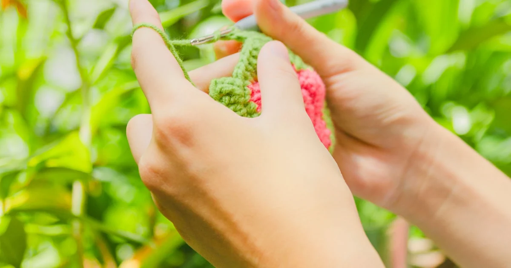
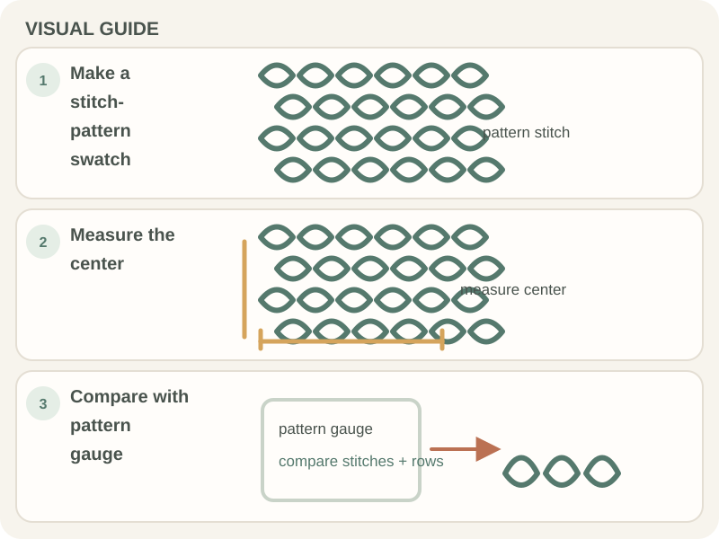

Tools, Yarn & Materials · Beginner guide
What Is Crochet Gauge and How Do You Measure It?
Gauge is the number of stitches and rows in a measured area; matching the pattern gauge helps a project reach its intended size.

A swatch also shows whether you like the fabric. Use the pattern stitch and follow its washing or blocking directions before measuring.
Before you begin
Make a swatch larger than the area you plan to measure so edge stitches do not distort the count. Have a ruler and the pattern gauge available.
Step-by-step instructions
- Crochet a swatch in the pattern stitch and with the intended yarn and hook.
- Wash or block the swatch if the pattern says to, then let it dry fully.
- Measure across the center of the swatch over the stated width and height.
- Compare stitches and rows with the pattern gauge; adjust hook size and make another swatch if needed.

How to check your work
Count over the exact measurement stated by the pattern, often a 4-inch square, and avoid the swatch edge. More stitches in that width means your stitches are smaller; fewer means they are larger.
Common beginner problems
- My gauge has too many stitches: Your stitches are smaller per inch than the pattern’s; try a larger hook and make a fresh swatch.
- My gauge has too few stitches: Your stitches are larger per inch; try a smaller hook and swatch again.
- Gauge changes after washing: Use the care method intended for the finished item before measuring the swatch.
Adjusting gauge
Change hook size first and keep the yarn and stitch pattern the same. If stitch gauge matches but row gauge does not, the pattern may allow row-count adjustments; check its notes before changing dimensions. See the Craft Yarn Council gauge guidance.
Frequently asked questions
Do I need a gauge swatch for every project?
It matters most when finished dimensions matter, such as clothing, blankets, or fitted pieces.
Should I measure before or after washing?
Follow the pattern. If the item will be washed or blocked, that may change the fabric.
Can I fix gauge by changing yarn weight?
That changes the fabric substantially. Start with the specified yarn and adjust hook size first.